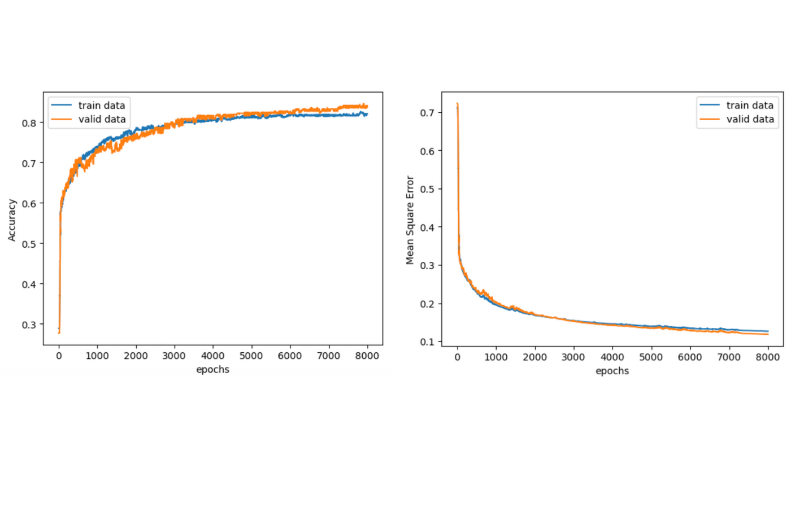

このプロジェクトは、大学の機械学習の授業で実施した分類モデルの学習課題です。この課題では、天気予測に関する二値分類モデルの構築に取り組みました。
プロジェクト名
機械学習：天気予測の二値分類モデル
実施時期
2023年12月
目的・概要
本プロジェクトの目的は、機械学習を用いて日中の天気（雨が降ったかどうか）を予測する二値分類モデルを構築することです。入力データとして、1日の日照時間、平均気温、平均風速、平均蒸気圧、平均雲量を使用し、出力として雨が降った（1）か降っていない（0）かを予測します。
使用技術・ツール
Pythonを使用し、主にNumPy、Matplotlib、scikit-learnなどのライブラリを活用しました。データの前処理、モデルの学習、評価指標の計算など、機械学習の一連のプロセスを実装しました。
データセット
気象庁データベースから東京都東京地点の2019年1月1日から2023年12月31日までの1,826個の天気データを収集しました。このデータを訓練データ（60%）、検証データ（20%）、評価データ（20%）に分割して使用しました。
成果・評価
構築したモデルの評価結果は以下の通りです：
- 適合率（Precision）: 0.781
- 再現率（Recall）: 0.730
- F1スコア: 0.754
課題と改善点
プロジェクトを通じて以下の課題と改善点を特定しました：
- 雨の判定基準の曖昧さ（天気概況の「雨」という文字の有無による判定）
- 雪やひょうなどの類似気象現象の考慮
- 入力データの拡充（最高・最低気温、風向など）
- 学習率の最適化
制作過程
まず、気象庁データベースから2019年から2023年までの天気データを収集し、天気概況に「雨」という文字が含まれる場合は1、それ以外は0として二値分類のラベルを作成しました。収集した1,826個のデータを訓練データ（1,095個）、検証データ（365個）、評価データ（366個）に分割し、scikit-learnのtrain_test_split関数を使用してデータセットを構築しました。
次に、Pythonでロジスティック回帰モデルを実装し、確率的勾配降下法を用いて学習を行いました。学習率は0.005に設定し、8,000エポックの学習を実施。各エポックで訓練データと検証データの損失関数の値と正解率を記録し、グラフ化して学習の進捗を確認しました。
最後に、学習したモデルを評価データに適用し、適合率、再現率、F1スコアを計算。また、混同行列を作成して予測の詳細な分析を行い、予測に失敗した事例から改善点を特定しました。評価の結果、モデルは雨の予測において比較的良好な性能を示し、適合率0.781、再現率0.730、F1スコア0.754を達成しました。